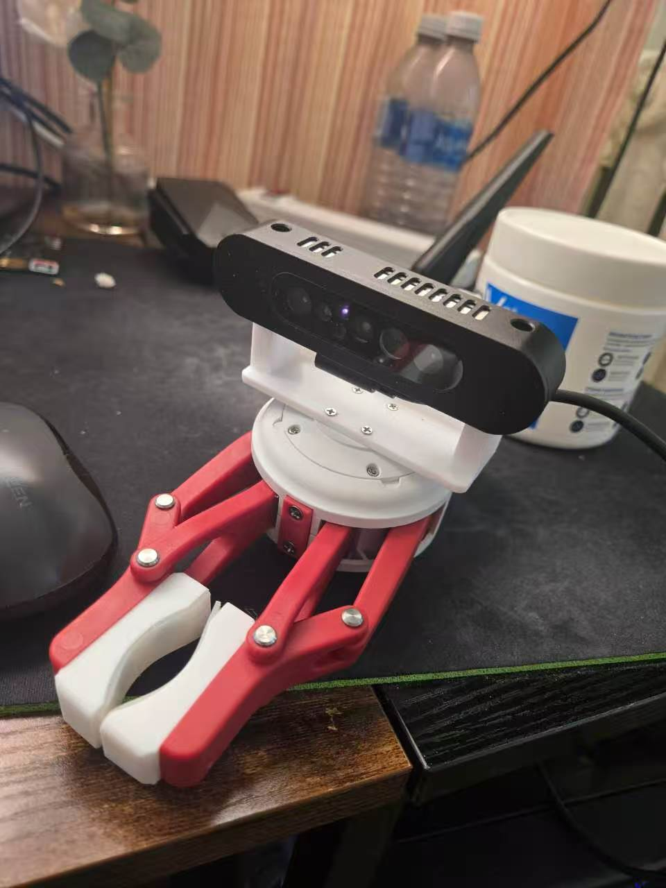

关于创始人
二十年中国软件开发与创业经验，如今投身农业机器人

2005 年，我是一个程序员，在中国写了 10 年代码。从 Java 到嵌入式，从 Web 前端到后端架构，经历了中国互联网从起步到爆发的全过程。
后来我选择了创业，成立了重庆盾博科技发展有限责任公司，专注于汽车 GPS 定位系统。那是"车联网"这个词还没有出现的年代，我们已经在做车辆实时追踪。
巅峰时期，我们的系统同时监控着超过 10,000 台卡车的实时位置、速度和状态。从硬件终端到通信协议，从数据平台到用户界面，全部自研。
疫情过后，我来到加拿大。最大的震撼是：机器人技术已经完全变了。
ROS2 让机器人开发变成了搭积木，YOLO 把视觉识别做到了实时可用，多模态 AI 模型更是把感知能力提升到了新高度。以前需要整个博士团队才能做的事情，现在几个工程师就能搞定。
加拿大的设施农业很发达，大量蘑菇种植农场就在安大略省周边。他们对自动化采摘有真实、迫切的需求。
目前项目的核心代码已经完成，视觉识别管道、ROS2 控制节点、后端服务都已跑通。正在等待机械臂到货后进行联调。
调试成功后，希望能找到农场提供真实环境进行测试验证，把一个可行的产品真正部署到生产环境中。